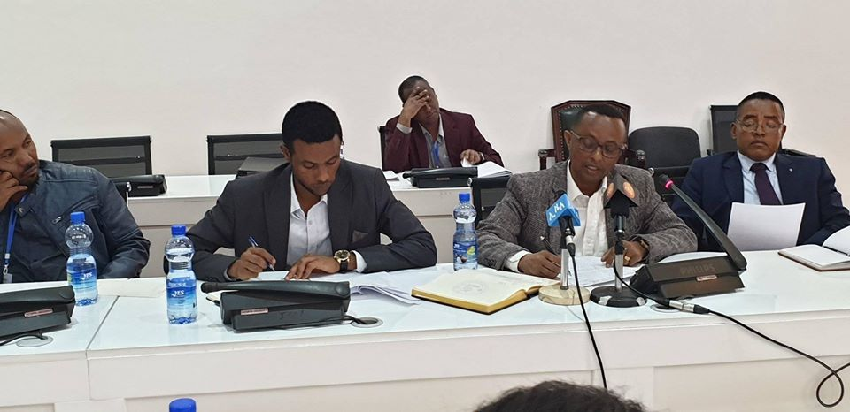
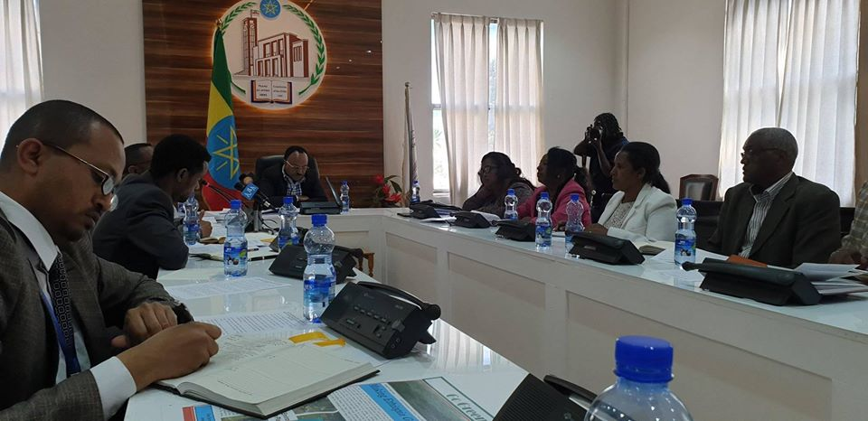
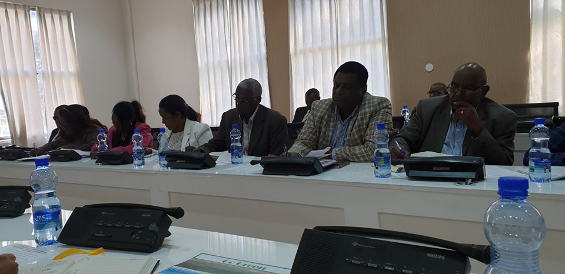

FDRE IMMIGRATION AND VITAL
EVENT AGENCY
breaking news...
የኢሚግሬሽን ዜግነትና ወሳኝ ኩነት ኤጀንሲ የ2012 ዓ.ም ዕቅድና የ1ኛ ሩብ ዓመት እቅድ አፈፃፀም በሕህዝብ/ተ/ም/ቤት የውጭ ግንኝኑነትና የሠላም ጉዳዮች ቋሚ ኮሚቴ ተገመገመ
የኢሚግሬሽን ዜግነትና ወሳኝ ኩነት ኤጀንሲ የ2012 ዓ.ም ዕቅድና የ1ኛ ሩብ ዓመት እቅድ አፈፃፀም በሕህዝብ/ተ/ም/ቤት የውጭ ግንኝኑነትና የሠላም ጉዳዮች ቋሚ ኮሚቴ ተገመገመኢሚግሬሽን ዜግነትና ወሳኝ ኩነት ኤጀንሲ ጥቅምት 24 ቀን 2012 ዓ.ም የ2012 ዓ.ም ዕቅድና የ1ኛ ሩብ ዓመት እቅድ አፈፃፀም ተገምግሟል፡፡ የኤጀንሲውን ዋና ዋና ዕቅድና አፈፃፀም ለቋሚ ኮሚቴው ያቀረቡት የኤጀንሲው ዋና ዳይሬክተር ክቡር አቶ ሙጅብ ጀማል እንደገለጹት በ2012 ዕቅድ ቀጣይነት ያለው የሰው ኃይል አቅም ግንባታ፤ የኤጀንሲው የአገልግሎት ተደራሽት መጨመር/ቅርንጫፎች/፤የመረጃ አመዘጋገብ፤ቅብብሎሽ፤ና አያያዝ ስርዓቱን ዲጂታላዝ ማረግና የፓስፖርት አገልግሎት አሰጣጡ ላይ የሚታዩ ችግሮችን ለመቅረፍ የሚያስችሉ አሰራሮችን ተግባራዊ ማረግና ሌሎች ተግባራት የታቀዱ መሆኑን አብራርተው በበጀት ዓመቱ የ1ኛ ሩብ ዓመት የተከናወኑ ስራዎች ኤጀንሲው አዲስ ውህደት ላይ በመሆኑ የመዋቅርና የሰው ኃይል ድልል፤የፓስፖርትና ሌሎች ሰነዶች መሰጠቱን፤የቆንፅላና ውጭ ዜጎች ቁጥጥር፤የአየርናና የየብስ ኬላዎች ቁጥጥርና የወሳኝ ኩነቶች ምዝገባ በዝርዝር ለቋሚ ኮሚቴው አቅርበዋል፡፡ ይህም በሩብ ዓመቱ 88278 የአዲስ የመደበኛ፤የድፕሎማቲክና የሰርቪስ ፓስፖርት አገልግሎት መሰጠቱ፤47356 ነባር የመደበኛ፤ድፕሎማቲክና ሰርቪስ ፓስፖርት እድሳትና እርማት አገልግሎት መሰጠቱ፤17656 በውጭ ለሚገኙ ኢትዮፕያውያን የመደበኛ፤የድፕሎማቲክና የሰርቪስ ፓስፖርት አገልግሎት መሰጠቱ፤8747 ለትውልደ ኢትዮፕያውያን የመታወቂያ አገልግሎት መሰጠቱ፤7262 ለውጭ ዜጎች የመኖሪያ ፈቃድ አገልግሎት መሰጠቱ፤ለውጭ ዜጎች የስራ፤የቱሪስት፤የኢቨስትመንትና የመዳረሻ ቪዛ አገልግሎት መሰጡ በጥቅሉ 195667 ሰነዶች መሰጠታቸውን ሪፖርቱ ቀርቧል፡፡ በሩም አመቱ በአምስቱም የኩነት አይነቶች ማለትም 13964ልደት፤40584ሞት፤20175ጋብቻ፤1337 ፍቺ፤19 ጉድፍቻ በጥቅሉ 202079 ኩነቶች መመዝገባቸው ሪፖርት ቀርቧል፡፡በተጨማሪም በሁሉም ክልሎች የተማሪ የልደት ምዝገባ 1732658 አፈፃፀም ቀርቧል፡፡ የቋሚ ኮሚቴው አባላት በቀረበው ሪፖርትና በኤጀንሲው ተግባር በተሰጡ የህዝብ አስተያየቶችና ባደረገው ምልከታ ላይ በመሞርከዝ ጥያቄዎችንና አስተያየቶችን አንስተዋል፡፡በዋናነት በፓስፖርት አሰጠጣጥ የሚታይ የአገልግሎት ቅልጥፍና ችግር፤የባለዘርፍ ጉዳዮችን ትኩረት ሰጥቶ በዕቅድ አካቶ አለመስራት ችግር የሚሉ ጥያቄዎች ተነስተዋል፡፡ በመጨረሻም የቋሚ ኮሚቴው ሰብሳቢ የተከበሩ አቶ ተስፋዬ ዳባ በኤጀንሲው የተከናወኑ ተግባራት በተለይ ከባለድርሻ ጋር ተቀናጅቶ መስራቱ፤ የሰው ኃይል አቅም ግንባታና ተሞክሮ ልውውጥ ማረጉአበረታች ቢሆኑም ክፍተት ያሉትን ጉዳዮች አንስተዋል፡፡
በመልካም አስተዳደር ዕቅድና በኤጀንሲው የኪራይ ሰብሳቢነት ምንጮች በጥናት ተለይተው መቀረፍ እንዳለባቸው፤ህግወጥ የሰዎች ዝውውር የአገሪቱ ህግ በሚፈቅደው መልኩ መከላከልናየገፅታ ግንባታ ስራ መሰራት እንዳለበት ገልጸዋል። የኢሚግሬሽን ዜግነትና ወሳኝ ኩነት ኤጀንሲ የ2012 ዓ.ም ዕቅድና የ1ኛ ሩብ ዓመት እቅድ አፈፃፀም በሕህዝብ/ተ/ም/ቤት የውጭ ግንኝኑነትና የሠላም ጉዳዮች ቋሚ ኮሚቴ ተገመገመ የኢሚግሬሽን ዜግነትና ወሳኝ ኩነት ኤጀንሲ ጥቅምት 24 ቀን 2012 ዓ.ም የ2012 ዓ.ም ዕቅድና የ1ኛ ሩብ ዓመት እቅድ አፈፃፀም ተገምግሟል፡፡ የኤጀንሲውን ዋና ዋና ዕቅድና አፈፃፀም ለቋሚ ኮሚቴው ያቀረቡት የኤጀንሲው ዋና ዳይሬክተር ክቡር አቶ ሙጅብ ጀማል እንደገለጹት በ2012 ዕቅድ ቀጣይነት ያለው የሰው ኃይል አቅም ግንባታ፤ የኤጀንሲው የአገልግሎት ተደራሽት መጨመር/ቅርንጫፎች/፤የመረጃ አመዘጋገብ፤ቅብብሎሽ፤ና አያያዝ ስርዓቱን ዲጂታላዝ ማረግና የፓስፖርት አገልግሎት አሰጣጡ ላይ የሚታዩ ችግሮችን ለመቅረፍ የሚያስችሉ አሰራሮችን ተግባራዊ ማረግና ሌሎች ተግባራት የታቀዱ መሆኑን አብራርተው በበጀት ዓመቱ የ1ኛ ሩብ ዓመት የተከናወኑ ስራዎች ኤጀንሲው አዲስ ውህደት ላይ በመሆኑ የመዋቅርና የሰው ኃይል ድልል፤የፓስፖርትና ሌሎች ሰነዶች መሰጠቱን፤የቀንፅና ውጭ ዜጎች ቁጥጥር፤የአየርናና የየብስ ኬላዎች ቁጥጥርና የወሳኝ ኩነቶች ምዝገባ በዝርዝር ለቋሚ ኮሚቴው አቅርበዋል፡፡ ይህም በሩብ ዓመቱ 88278 የአዲስ የመደበኛ፤የድፕሎማቲክና የሰርቪስ ፓስፖርት አገልግሎት መሰጠቱ፤47356 ነባር የመደበኛ፤ድፕሎማቲክና ሰርቪስ ፓስፖርት እድሳትና እርማት አገልግሎት መሰጠቱ፤17656 በውጭ ለሚገኙ ኢትዮፕያውያን የመደበኛ፤የድፕሎማቲክና የሰርቪስ ፓስፖርት አገልግሎት መሰጠቱ፤8747 ለትውልደ ኢትዮፕያውያን የመታወቂያ አገልግሎት መሰጠቱ፤7262 ለውጭ ዜጎች የመኖሪያ ፈቃድ አገልግሎት መሰጠቱ፤ለውጭ ዜጎች የስራ፤የቱሪስት፤የኢቨስትመንትና የመዳረሻ ቪዛ አገልግሎት መሰጡ በጥቅሉ 195667 ሰነዶች መሰጠታቸውን ሪፖርቱ ቀርቧል፡፡ በሩም አመቱ በአምስቱም የኩነት አይነቶች ማለትም 13964ልደት፤40584ሞት፤20175ጋብቻ፤1337 ፍቺ፤19 ጉድፍቻ በጥቅሉ 202079 ኩነቶች መመዝገባቸው ሪፖርት ቀርቧል፡፡በተጨማሪም በሁሉም ክልሎች የተማሪ የልደት ምዝገባ 1732658 አፈፃፀም ቀርቧል፡፡ የቋሚ ኮሚቴው አባላት በቀረበው ሪፖርትና በኤጀንሲው ተግባር በተሰጡ የህዝብ አስተያየቶችና ባደረገው ምልከታ ላይ በመሞርከዝ ጥያቄዎችንና አስተያየቶችን አንስተዋል፡፡በዋናነት በፓስፖርት አሰጠጣጥ የሚታይ የአገልግሎት ቅልጥፍና ችግር፤የባለዘርፍ ጉዳዮችን ትኩረት ሰጥቶ በዕቅድ አካቶ አለመስራት ችግር የሚሉ ጥያቄዎች ተነስተዋል፡፡ በመጨረሻም የቋሚ ኮሚቴው ሰብሳቢ የተከበሬ አቶ ተስፋዬ ዳባ በኤጀንሲው የተከናወኑ ተግባራት በተለይ ከባለድርሻ ጋር ተቀናጅቶ መስራቱ፤ የሰው ኃይል አቅም ግንባታና ተሞክሮ ልውውጥ ማረጉአበረታች ቢሆኑም ክፍተት ያሉትን ጉዳዮች አንስተዋል፡፡ይህም በአገልግሎት አሰጣጡ ውስጥ የሚታዩ የኪራይ ሰብሳቢነት ችግሮች በመልካም አስተዳደር ዕቅድና በኤጀንሲው የኪራይ ሰብሳቢነት ምንጮች በጥናት ተለይተው መቀረፍ እንዳለባቸው፤ህግወጥ የሰዎች ዝውውር የአገሪቱ ህግ በሚፈቅደው መልኩ መከላከልናየገፅ ግንባታ ስራ መሰራት እንዳለበት ገልጸዋል፡፡
የውጭ ዜጎች ቁጥጥርና ቆንስላ ጉዳዮች ዳይሬክቶሬት ተግባርና ኃላፊ 1. የውጭ አገር ሰዎች መመዝገብ በተመለከተ። (የኢሚግሬሽን አዋጅ354/ 1995 የሚኒስትሮች ደንብ 114/1997) ሀ).የውጭ አገር ሰዎች የሚመዘገቡበት አሰራር ይዘረጋል፣ ለ) ኢትዮያውስጥ የሚኖሩና የሚቆዩ የውጭ አገር ሰዎች ይመዘግባል ይቆጣጠራል፣ ሕግና ደንብ እንዲከበር ያደርጋል። ሐ). ከ90 ቀናት በላይ በኢትዮጵያ ውስጥ ለመቆየት የውጭ አገር ሰዎች ከገቡበት ቀን ጀምሮ በ30 ቀናት ውስጥ ይመዘግባል። የኤጀንሲውና ሌሎች የኢትዮጵያ ሕጎች በመተላለፍ ወደ ኢትዮጵያ በሕገ ወጥ መንገድ የገባ ወይም የወጣ ወይም እንዲህ ያለውን ሰው የረዳ ማንኛውም ሰው በሕግ እንዲጠየቅ ያደርጋል። የጸና የመኖሪያ ፍቃድ ወይም የይለፍ ፈቃድ ሳይኖሮው ኢትዮጵያ ውስጥ የኖረ መኖሪያ ፍቃድ የሚያስፈልገው መሆኑን እያወቀ የውጭ አገር ሰው ኢትዮጵያ ውስጥ እንዲኖር (እንዲቆይ) ያደረገ መነኛውም ሰው በመቆጣጥር በሕግ እንዲጠየቅ ያደርጋል። የስራ ፈቃድ ሳይኖራቸው በሕገወጥ መንግድ የሚሰሩ የውጭ አገር ሰዎች ይላያል፣ ይቆጣጠራል በልተፈቀደላቸው የስራ መስክና የኢንቨስትመንት መስክ የተሰማሩ የውጭ አገር ሰዎችና የሚያሰሩ የሚያሰራ ማንኛውም ድርጅት ወይም ግለሰው ይቆጣጠራል። የኤጀንሲውና ሌሎች የኢትዮጵያ ሕጎች በመተላለፍ፤ ወደ ኢትዮጵያ የሚገቡ ወይም የሚወጡ፣ ኢትዮጰያ ውስጥ የሚቆዩና የሚኖሩ፣ የስራ ፍቃድ ሳይኖራቸውና በልተፈቀደ የስራ መስክ የሚሰማሩ የውጭ አገር ሰዎች በኤጀንሲው ቅጣትና ለሕግ የሚቀርቡ ከሆኑ አጣርቶ መረጃና ማስረጃ በማደራጀት ለሕግ ያቀርባል። ከአገር እንዲወጣ ትእዛዝ የተላልፈበት የውጭ አገር ሰው በትእዛዙ መሰረት በመካታተል ከአገር እስከሚወጣ ድረስ በአዋጅ ቁጥር 354/1995 አንቀጽ 8 (3) በማረፊያ ቤት እንዲቆይ ሊያደርግ ይችላል። ከአገር እንዲወጣ ትእዛዝ የተላለፈበት የውጭ አገር ሰው በአዋጅ ቁጥር 354/1995 አንቀጽ 8 መሰረት ያስፈጽማል (ዲፖርት ያደረጋል)።አጠራጣሪ እና የተጭበረበሩ ሰነዶች ሲያጋጥሙ ሕግና ስርዓትን በመከተል ጉዳዮችን ያጣራል። ሃሰተኛ ሰነድ በመጠቀም የጉዞ ሰነድ፣ የይለፍ ሰነድ፣ መኖሪያ ፍቃድና ሌሎች የኤጀንሲው አገልግሎት ለመግኘት የተንቀሳቀሰ፣ እነዚህ ሰነዶችን አስመስሎ የሰራ የውጭ አገር ሰው ወይም የተባበረ ሰው በወንጀል ሕግ አንቀጽ 378 እንዲሁም በአዋጅ ቁጥር 909/2007 አንቀጽ 4 (5) መሰረት እንዲጠየቁ ለህግ አካላት ያቀርባል። መልካም ንባብ ይቀጥላል ...
the most view news......
የውጪ ዜጎች ምዝገባ እስከ ጥቅምት 15 ተራዘመ የኢፌድሪ ኢምግሬሽን ዜግነትና ወሳኝ ኩነት ኤጀንሲ ኢትዮጲያ ውስጥ ገብተው የሚንቀሳቀሱ የውጪ ዜጎችን የመመዝገብ እና የመቆጣጠር ስልጣን እና ተግባር በአዋጅ ቁጥር 354/1997 እና ደንብ ቁጥር 114/2004 እንደተሰጠው ይታወቃል፡፡ ስለሆንም የቱሪስት የኮንፍረንስ እና ሌሎች የቪዛ አይነቶች ወስዳችሁ ወደ ኢትዮጲያ በመግባት ቪዛው የሚፀናበት ጊዜ በማለፉ ሳታሳድሱ የቆያችሁ እንዲሁም የመኖሪያ ፈቃድ ወስዳችሁ ከተፈቀደላችሁ ጊዜ በላይ በኢትጲያ ውስጥ ለምትኖሩ የውጪ ሃገር ዜጎች በሙሉ በኤጀንሲያችን ልዩ ድጋፍ ወደ ህጋዊ ስርአት መግባት የሚቻልበት ሁኔታ ለማመቻቸት እንዲቻል ከሃምሌ 15/2011 ዓ.ም እስከ ነሃሴ 30/2011 ዓ.ም ድረስ እንድትመዘገቡ ማሳወቃችን ይታወሳል፡፡ በተሰጠው ጊዜ ገደብ ውስጥ በርካታ የውጪ ዜጎች በመመዝገብ ወደ ህጋዊ ስርአት የገቡ በመሆኑ እና ለተቀሩት ተጨማሪ ጊዜ በማስፈለጉ እስከ ጥቅምት 15 ቀን 2012 ዓ.ም ምዝገባው የተራዘመ መሆኑን ኤጀንሲው ያስታወቃል፡፡ ስለሆነም በኢምግሬሽን ዜግነትና ወሳኝ ኩነት ኤጀንሲ ቢሮ ቁጥር 81 እንዲሁም በድሬድዋ፣ሃዋሳ፣አዳማ፣ጅማ፣ባህርዳር፣ደሴ፣መቐለ፣ጅግጅጋ እና ሰመራ በሚገኙ የኤጀንሲው ቅርንጫፍ መስሪያ ቤቶች በአካል በመቅረብ እንድትመዘገቡ ጥሪያችንን እያቀረብን በተጠቀሰው ጊዜ ቀርበው በማይመዘገቡ ላይ ኤጀንሲው ተገቢውን ህጋዊ እርምጃ እንደሚወስድ ያሳውቃል፡፡ ለተጨማሪ መረጃ በ 8133 ነፃ የስልክ መስመር ላይ ያግኙን